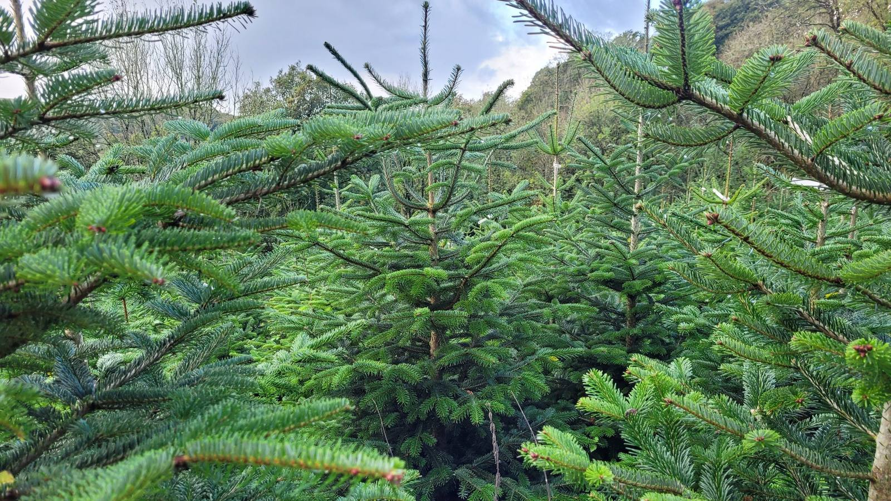
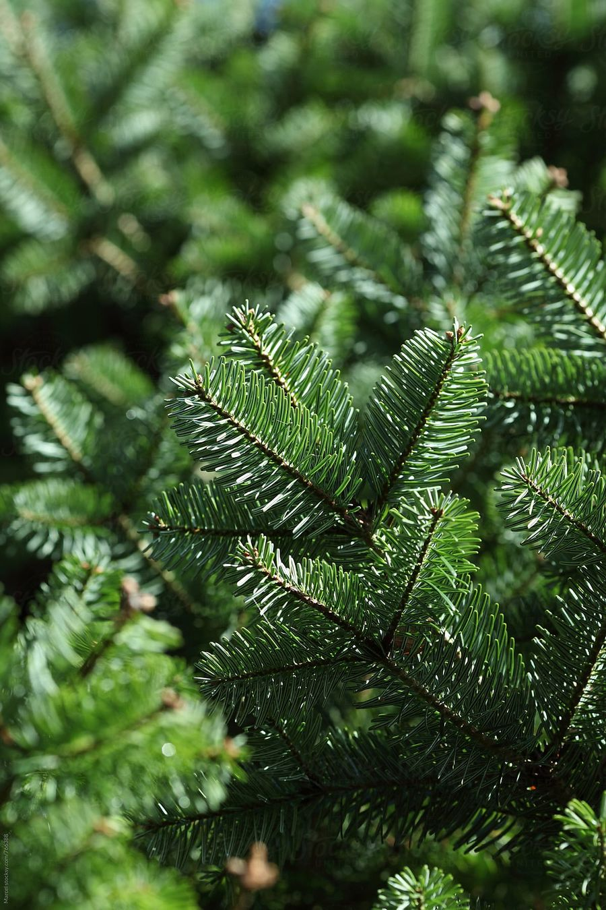
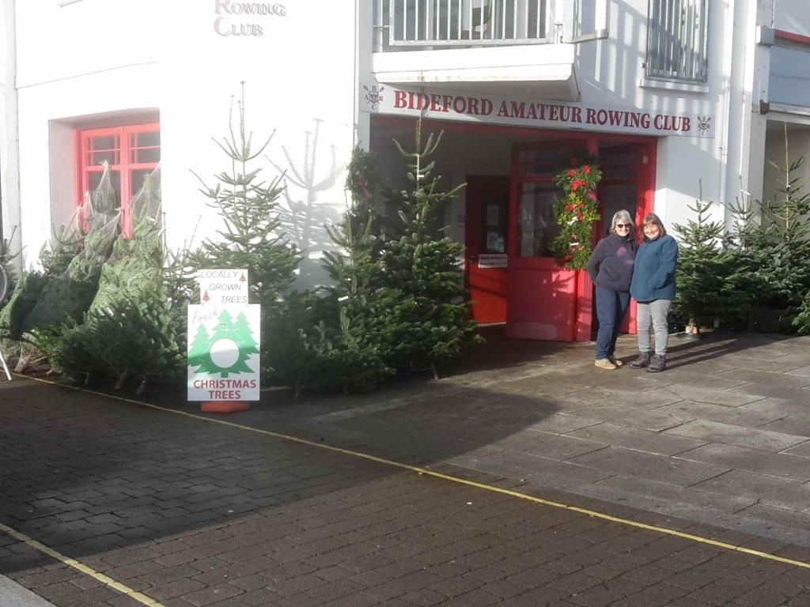

About us
A 10-acre Christmas tree farm overlooking the River Yeo
Our farm
Torridge Christmas Tree farm is a 10-acre farm, that overlooks the River Yeo.
The farm was established in 2014 by Simon, Alex and Ken, after acquiring the surrounding grounds to an old Devon Manor House.
The entirety of the land had been unmanaged for many decades and was covered in Cherry Laurel, which was planted in the early part of the 20th century. The first job was to remove all of the invasive species and make the ground suitable for planting. As an acre of Laurel was cleared, Christmas trees were put in its place.
We have retained a lot of the British native trees (mainly Oak, Hazel, and Beech) but like most of the country, our Ash trees are suffering heavily from Ash dieback and we are in the process of safely removing them, before they fall. An unfortunate and ongoing process.
Since removing the Laurel, we have had a noticeable increase in the population of Birds of Prey. Clearly indicative that the opening up of the land has made it prime hunting grounds for these species.

Environmental
You can’t beat a real Christmas tree! Not only does it look great, but it’s a smell that encapsulates Christmas.
All our trees are cut within 48hrs of arriving at our stalls, ensuring quality and that great Christmas tree smell. A fresh tree always looks better than one that has been shipped over from the continent, quite often having been cut weeks before it reaches its destination.
A real Christmas tree absorbs carbon dioxide and releases oxygen, a cycle and service that cannot be provided by artificial trees. The Carbon Trust state that a real Christmas tree has a significantly lower carbon footprint than an artificial tree.
Local
Most Christmas trees in Britain come from Scandinavia, Germany, and Scotland.
By buying a tree from us not only will you be supporting a local independent business, but you will also be dramatically reducing your carbon footprint as well. As mentioned above, you also are receiving a far fresher product as well.
We use local labour/companies when needed, helping to bolster the local economy.

The Nordmann fir
The Nordmann fir is the most popular Christmas tree in Europe. Evenly shaped with soft foliage, making it a joy to decorate. The glossy, dark green needles have a whitish and light blue underside, and the strong branches are great for hanging those big glass decorations on.
Top tip: If you suffer from allergies, the Nordmann fir is a mighty fine choice. The needles have the added barrier of a thick waxy coating.
Are you a local school?
We are raising money for our children’s primary school this year, by selling trees on behalf of the school to the parents of the students.
If you are a local school looking for a great way to raise money, then why not let us supply your trees?
What our service offers is to drop the trees at the school gate for collection. The parents and teachers have also been known to offer a local delivery service, for those in need.
Feel free to chat with us about how we did it!

Prices & options
This season’s tree sizes, prices, stands and delivery options are all in our order form. Choose what you’d like and we’ll take care of the rest.